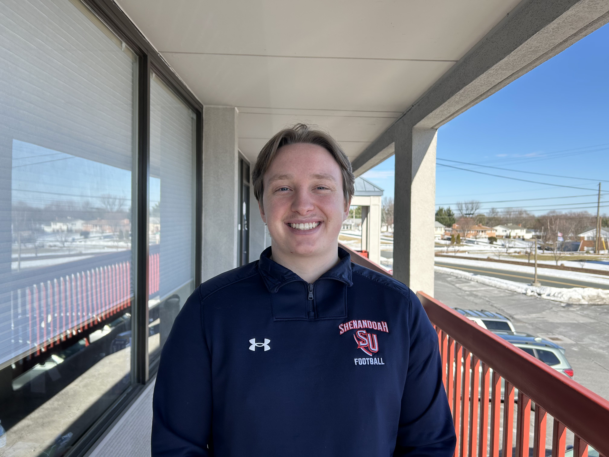

Education
Shenandoah University, Winchester, VA
Bachelors of Science in Computer Science
Minor: Artificial Intelligence; Mathematics
Expected Graduation: 2027
Cumulative GPA: 3.901
Projects
ShuttleU (SwiftUI Mobile App) - Swift, SwiftUI, MapKit
- Designed a campus shuttle-tracking app with a custom map view, pan/zoom gestures, and real-time stop markers.
- Implemented gesture recognizers and data binding for dynamic UI updates.
- Focused on creating an intuitive interface for live transportation data visualization.
- Built a browser-based password manager that securely stores data locally without cloud dependencies.
- Implemented encryption and autofill functionality for password retrieval.
- Focused on usability and offline-first security design.
- Implemented multiple linear and logistic regression models from scratch to understand underlying math and optimization.
- Analyzed datasets (e.g., Boston Housing, Advertising) to explore prediction accuracy and coefficient interpretation.
- Gained experience with model evaluation, feature scaling, and visualization.
Work Experience
Programming Tutor - Code Ninjas, Burke, VA
-
- Instructed classes of up to 20 students (ages 7–14) in Scratch, JavaScript, Lua, and C#.
- Communicated regularly with parents and community leaders about student progress.
- Organized outreach programs to introduce elementary school students to programming.
- Present
- Tutored college students in mathematics and computer science
- Helped advanced programmers debug code and improve problem-solving approaches.
- Present
- Supported instruction for approximately 25 computer science students.
- Reinforced lecture material through hands on programming help and personalized guidance.
-
- Coached the 18 and under age group team
- Designed and led training for a team of 50 swimmers (ages 18 and under).
- Collaborated with board members, parents, and swimmers to maintain team performance.
-
- Supported instruction for over 100 swimmers in the 18-and-under group.
Technical Skills
Languages
- Java
- Python
- C#
- Javascript
- Lua
- SQL
- Tensorflow
- scikit-learn
- Pandas
- Numpy
- Git
- VS Code
- Jupyter Notebook
- Data Analysis
- Machine Learning
- Software Development
- Debugging
- Cloud Fundamentals (AWS & Azure)
- Problem Solving
- Technical Communication
Certifications
- Microsoft Azure Fundamentals (AZ-900)
- AWS Certified Cloud Practitioner